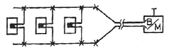

잠수기능사 (2009-09-27 기출문제)
1과목: 잠수물리
1. 해수 수심 33feet에 해당하는 계기압은?
- 1기압
- 2기압
- 3기압
- 4기압
(정답률: 81%)

2. 다음 중 물의 흐름에 영향을 가장 적게 끼치는 것은?
- 조수
- 중력
- 바람
- 염분도
(정답률: 94%)
3. 잠수사가 수중에서 수직으로 서 있는 경우 잠수사의 몸에 가해지는 압력에 대한 설명 중 옮은 것은?
- 발에 가해지는 압력이 크다.
- 머리에 가해지는 압력이 크다.
- 머리에 가해지는 압력과 발에 가해지는 압력은 같다.
- 머리와 발에 가해지는 압력은 바닷물과 민물을 비교할 경우 서로 반대의 크기를 가진다.
(정답률: 71%)
4. 혼합기체의 전체압력은 각 성분 기체의 부분압력의 총합과 같다는 법칙은?
- 보일의 법칙
- 샤를의 법칙
- 달톤의 법칙
- 헨리의 법칙
(정답률: 56%)
5. 물의 온도가 섭씨 30도일 때 화씨로는 몇도인가?
- 70도
- 78도
- 86도
- 94도
(정답률: 74%)
6. 수중에서 10피트(약3m)의 거리에 있는 물체는 잠수사에게 실제로 얼마의 거리에 있는 것처럼 보이는가?
- 5피트
- 7.5피트
- 13.3피트
- 20피트
(정답률: 81%)
7. 수중의 깊은 수심에서 색 구분을 못하는 주 이유는?
- 빛의 분산
- 빛의 흡수
- 빛의 산란
- 수압의 작용
(정답률: 73%)
8. 다음 중 인체에 가장 해로운 기체는?
- 질소( N2)
- 산소( O2)
- 헬륨( He )
- 일산화탄소( CO )
(정답률: 90%)
9. 해양에서 표층해류의 주된 원인이 되는 요인은?
- 온도
- 바람
- 전향력
- 밀도차
(정답률: 52%)
10. 정상적인 잠수복(Wet suit)을 165피트에서 사용할 때 33피트에서 잠수복이 가지는 절열성의 60% 정도를 상실하게 되는 주 이유는?
- 압력을 많이 받기 때문
- 수온이 낮기 때문
- 옷이 두껍지 않기 때문
- 공급 공기가 차기 때문
(정답률: 66%)
11. 다음 중 잠수사가 하강을 하면서 해저에서 머물러 있는 경우 그 상태에서 일어날 위험의 가능성이 가장적은 것은? (단, 상승을 하지 않고 머물러 있는 것을 가정한다.)
- 질소 중독
- 감압병
- 압착(Squeeze)
- 산소중독
(정답률: 57%)
12. 잠수사가 잠수 시 생길 수 있는 의식 불명의 원인과 가장 거리가 먼 것은?
- 기체 색전증
- 심한 감압병
- 급속한 하잠
- 일산화탄소 중독
(정답률: 74%)
13. 질소마취를 피하기 위한 일반적인 안전잠수 수심은?
- 60m 이내
- 50m 이내
- 40m 이내
- 30m 이내
(정답률: 94%)
14. 중증 감압병 환자나 기체 색전증 환자를 재압 챔버가 있는 의료시설로 옮길 때 주의사항 중 틀린 것은?
- 가능하면 100% 산소를 공급한다.
- 비행기로 옮길 때는 가능한 낮게 비행하도록 한다.
- 머리를 다리보다 높게 하여 후송한다.
- 가급적 최대한 빠르게 후송한다.
(정답률: 93%)
15. 기체색전증에 걸릴 우려가 없는 잠수방법은?
- 혼합기체잠수
- 심해잠수기구
- SCUBA 잠수
- Skin 잠수(호흡정지잠수)
(정답률: 67%)
2과목: 잠수위생
16. 다음 수중 생물 중 동굴, 난파선과 같이 바닥이 좁고 깊은 곳에 사는 생물은?
- 뱀장어
- 상어
- 성게
- 해파리
(정답률: 83%)
17. 호흡기체 오염으로 인한 일산화탄소 중독증은 잠수과정 중 주로 언제 발생하는가?
- 하잠 중
- 해저 체류 중
- 상승 중
- 하잠 및 상승 중
(정답률: 57%)
18. 일반적은 잠수에서 감압 시간 을 결정하는 주요인은?
- 잠수복 및 공기호흡기 종류
- 산소 및 이산화탄소량
- 수온 및 해류속도
- 잠수 수심 및 시간
(정답률: 86%)
19. 잠수재현장치(가압챔버)의 이용시 내부의 피검사자가 후끈 후끈한 더운 현상을 경험하는 것은 가압부터 감압의 단계 중 어느 과정인가?
- 가압 과정
- 목표수압 체류 및 감압 과정
- 감압 과정
- 가압부터 감압의 전 과정
(정답률: 70%)
20. 호흡의 충동을 느끼는 것은 혈액 내의 어떤 양에 주로 좌우되는가?
- 산소
- 이산화탄소
- 일산화탄소
- 백혈구
(정답률: 70%)
21. 중증 감압병이나 기체색전증 때 공기방울이 뇌혈관을 막으면 뇌 조직에 손상을 초래한다. 일반적으로 뇌 세포에 약 몇 분정도 산소공급이 차단되면 뇌 손실이 초래되기 시작하는가?
- 4 ~ 5 분
- 9 ~ 10 분
- 14 ~ 15 분
- 19 ~ 10 분
(정답률: 88%)
22. 수중 잠수 시 기체 색전증을 예방하기 위해 해야 하는 가장 중요한 것은?
- 체온을 유지한다.
- 오염된 공기의 사용을 금지한다.
- 오랜 시간 동안의 잠수를 피한다.
- 상승시 숨을 참지 않고 계속 호흡한다.
(정답률: 73%)
23. 두 눈만 감싸고 코가 외부에 노출된 물안경을 잠수시 상요해서는 안되는 이유로 가장 접합한 것은?
- 시야가 좁아져 작업효율이 낮아지기 때문이다.
- 중이의 압력평형이 힘들기 때문이다.
- 코로 물이 들어와 질식할 수 있기 때문이다.
- 물안경 압착증을 예방할 수 없기 때문이다.
(정답률: 79%)
24. 중이염 또는 기타 이유로 고막이 파열된 사람이 잠수를 하려고 한다면 감독관은 어떤 조치를 취해야 하는가?
- 귀마개를 착용시켜야 한다.
- 고막이 뚫려 있으면 중이압착증이 생기지 않으므로 특별한 조치가 필요없다.
- 항생제를 복용시킨다.
- 잠수를 하여서는 안되므로 금지 시킨다.
(정답률: 86%)
25. 표준감압표에서 총 상승시간이란?
- 상승시간에서 감압을 위해 수중 정지한 시간을 제외한 시간
- 상승시간과 수면휴식시간을 합한 시간
- 승승시간과 감압을 위해 수중 정지한 시간을 합한시간
- 감압을 우해 1차 정지한 수심까지의 상승시간
(정답률: 78%)
26. KMB 밴드 마스크의 표면공급요구압력(psi)은?
- 35 ~ 65
- 75 ~ 1⑤
- 115 ~225
- 235 ~ 345
(정답률: 61%)
27. SCUBA 잠수 시 사용되는 잠수복에 대한 설명 중 틀린 것은?
- 체온 유지의 역할을 한다.
- 상해방지의 역할을 한다.
- 습식과 건식이 있다.
- 습식의 경우는 부력조절기능을 가진다.
(정답률: 82%)
28. 다음 중 공기압축기를 선택할 때 가장 먼저 고려해야 할 사항은?
- 상용압력과 토출량
- 압축구조와 토출량
- 회전속도와 냉각방법
- 이동용 또는 고정용 여부
(정답률: 90%)
29. 스쿠바 잠수용 수경을 선택할 때의 중요한 고려 요인과 가장 거리가 멋 것은?
- 얼굴에 잘 맞아야 한다.
- 배수변이 있어야 한다.
- 유리가 열처리된 것이어야 한다.
- 물이 새지 않아야 한다.
(정답률: 79%)
30. 엔진에 사용되는 윤활유의 성질에서 가장 중요한 것은?
- 점도
- 온도
- 압력
- 열효율
(정답률: 75%)
3과목: 잠수장비
31. 일반적으로 엔진을 시동하기 전에 가장 먼저 검사하여야 할 곳은?
- 시동 스위치
- 전기회로 계통
- 윤활유 계통
- 엔진 전체의 안전검사
(정답률: 82%)
32. KMB 장비 중 생명줄의 가장 중요한 기능은?
- 안전이동
- 수직이동
- 안전수심측정
- 호흡매체 공급
(정답률: 78%)
33. 재압챔버 작동 전 챔버 내 검사할 사항이 아닌 것은?
- 청결여부
- 수밀 여부
- 통화장치 작동 여부
- 화학소화기비치여부
(정답률: 73%)
34. 밴드바스크(KMB) 잠수장비에 대한 설명 중 옳은 것은?(오류 신고가 접수된 문제입니다. 반드시 정답과 해설을 확인하시기 바랍니다.)
- 수직 이동이 아주 자유롭다.
- 안면 압착의 상태가 심하다.
- 편리하고 안전한 통화장치가 있다.
- 착용이 불편하다.
(정답률: 67%)
35. 스쿠바 잠수에서 수중 잔압계(Pressure gauge)를 호흡기 1단계에 연결하려고 할 때 결합 위치는?
- P.G 라고 표시된 곳에
- H.P 라고 표시된 곳에
- 아무표시도 없는 곳에
- L.P 라고 표시된 곳에
(정답률: 66%)
36. 4행정(cycle)기관의 행정 순서는?
- 흡입 → 압축 → 폭발 → 배기
- 압축 → 배기 → 흡입 → 폭발
- 폭발 → 압축 → 흡입 → 배기
- 배기 → 폭발 → 흡입 → 압축
(정답률: 88%)
37. 스쿠바 공기통의 수압검사에서 팽창하였던 공기통이 다시 몇 %이상으로 축소되지 않으면 폐기시켜야 하는가?
- 75%
- 80%
- 85%
- 95%
(정답률: 50%)
38. 4기통 기관의 실린더 개수는?
- 3개
- 4개
- 5개
- 6개
(정답률: 79%)
39. 수퍼라이트 -17 헬멧의 역지밸브 (Non-Return) 검사는 언제 하는가?
- 잠수 전
- 잠수 후 세척 시
- 일주일 간격으로
- 한 달에 한 번씩
(정답률: 91%)
40. 스쿠바 공기통의 목 주변에 찍혀 있는“FP150" 이라는 각인의 의미는?
- 시험 압력
- 상용압력
- 일련번호
- 수압검사일자
(정답률: 89%)
41. 얼음 밑 다이빙(Ice diving)을 할 때 가장 중요한 안전 장비는?
- 수중 전등
- 보조 공기통
- 안전 밧줄
- 온수 잠수기 장비
(정답률: 88%)
42. 물막이(Cofferdam)의 가장 좋은 설치 방법은?
- 간조시 설치 만조시 배수
- 정조시 설치 저조시 배수
- 만조시 설치 만조시 배수
- 만조시 설치 간조시 배수
(정답률: 66%)
43. 소화, 방소, 배수, 후 안전한 항구로의 예인이 주 임무인 구조는?
- 항만 구조
- 재난 구조
- 전투 구조
- 복합 구조
(정답률: 64%)
44. 해양오염과 가장 관계가 적은 것은?
- 연근해 적조 발생
- 해양생태계 파괴
- 지구 온난화 현상
- 해저면 확장
(정답률: 83%)
45. 잠수사의 1일 근로시간을 초과하게 작업을 진행시켰다면 사업주가 받는 벌칙기준은?
- 3개월 이하의 징역
- 6개월 이하의 징역
- 1년 이하의 징역 또는 1천만원 이하의 벌금
- 3년 이하의 징역 또는 2천만원 이하의 벌금
(정답률: 59%)
4과목: 잠수작업
46. 일반적인 수중 산소 아크 절단법에 관한 사항에 해당하지 않는 것은?
- 발전기가 필요 없다.
- 일반적으로 가장 널리 사용되는 방법이다
- ( - )극은 전극봉이 연결한다.
- 정극성으로 연결 한다.
(정답률: 44%)
47. MAPP 가스 절단방법의 설명 중 틀린 것은?
- 비금속류도 절단할 수 있다.
- 슬래그이 영향이 적다.
- 간단한 경량 잠수기구로도 절단 가능하다.
- 사용기체는 수소와 산소이다.
(정답률: 64%)
48. 와이어 로프에 크기는 무엇을 기준으로 하는가?
- 직경
- 둘레
- 가닥수
- 반경
(정답률: 76%)
49. 에어 리프트(Air lift)란?
- 공기를 분사하는 장치
- 공기를 이용하여 모래 등을 빨아올리는 장치
- 공기를 이용하여 모래 등을 불어내는 장치
- 물을 이용하여 모래 등을 퍼올리는 장치
(정답률: 73%)
50. 공사의 세부적인 시공기준이 제시되어 있는 것은?
- 전문 시방서
- 시공계획서
- 단위 공정표
- 설계도면
(정답률: 81%)
51. 전기뇌관 발파 시 준수해야 할 안전 수칙에 해당되지 않는 것은?
- 발파회로 내에 제조회사가 다른 전기뇌관을 사용해서는 안된다.
- 정전기가 일어나는 곳에서는 발파를 해서는 안된다.
- 뇌우가 일어나는 곳에서 발파를 해서는 안된다.
- 뇌관과 폭약은 안전한 장소에서 같이 보관한다.
(정답률: 82%)
52. 수중 수직용접에서 상향식(위보기, Over head)으로 할 때 진행 방향 기준으로 봉의 가장 적절한 각도는?
- 5 ~ 15도
- 15 ~30도
- 30 ~ 40도
- 35 ~ 55도
(정답률: 53%)
53. 동일한 규격일 때 샤클(Shackle)의 강도는?
- 훅의 3배
- 훅의 5배
- 체인의 2배
- 체인의 3배
(정답률: 79%)
54. 천연섬유색인 시살(Sisal)의 특징은?
- 강도는 섬유색 중 가장 높다.
- 수중에서 아주 유연하다.
- 세색(small stuff)으로 사용치 않는다.
- 수중용으로 많이 사용된다.
(정답률: 49%)
55. 표준양생은 콘크리트를 수중에서 양생할 때 수온을 몇도 전후로 유지하는 것을 말하는가?
- 10도
- 15도
- 20도
- 25도
(정답률: 60%)
56. 법률에 의한 잠수사의 1일 근로시간은?
- 5시간
- 6시간
- 7시간
- 8시간
(정답률: 86%)
57. 배수펌프 설치 시 펌프의 유지각도는 몇 도를 초과해서는 안되는가?
- 15도
- 25도
- 30도
- 35도
(정답률: 34%)
58. 수중탐색 방법 중 원형탐색의 필수 장비가 아는 것은?
- 나침반
- 부표
- 줄
- 추
(정답률: 65%)
59. 잠수사가 수직 용접을 하려고 할 때 용접봉을 하양식으로 하면 좋은 이유는?
- 물거품이 잠수사의 시야를 방해하지 않기 때문에
- 용접각도의 유지가 용이하기 때문에
- 강도가 연성이 높아지기 때문에
- 전류의 조절이 유리하기 때문에
(정답률: 87%)
60. 수중폭파에서 사용되는 회로구성 중 그림과 같은 것은?

- 직렬 회로
- 병렬 회로
- 지연식 회로
- 직·병렬 회로
(정답률: 78%)